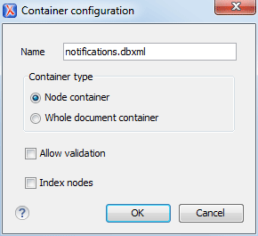
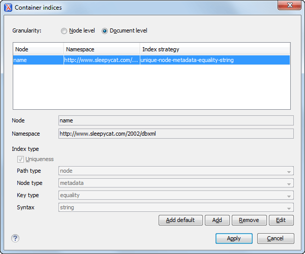

Berkeley DB XML Contextual Menu Actions
While browsing Berkeley DB XML connections in the Data Source Explorer view, the various nodes include the
following contextual menu actions:
 Connection Level Nodes
Connection Level Nodes-
 Configure Database
Sources
Configure Database
Sources- Opens the Data Sources preferences page where you can configure both data sources and connections.
- Disconnect
- Stops the connection.
- New Collection
-
Opens a Container configuration dialog box that allows you to adds a new container in the repository.
Figure 1. Container Configuration Dialog Box This dialog box allows you to configure the following:- Name - The name of the new container.
- Container type - At creation time, every
container must have a type defined for it. This container type identifies
how XML documents are stored in the container. As such, the container type
can only be determined at container creation time. You cannot change it
when subsequent container opens. You can select one of the following
types:
- Node container - XML documents are stored as individual nodes in the container. Each record in the underlying database contains a single leaf node, its attributes and attribute values (if any), and its text nodes (if any). Berkeley DB XML also keeps the information it requires to reassemble the document from the individual nodes stored in the underlying databases. This is the default selection and is the preferred container type.
- Whole document container - The container contains entire documents. The documents are stored without any manipulation of line breaks or whitespace.
- Allow validation - If selected, documents will be validated when they are loaded into the container. The default behavior is to not validate documents.
- Index nodes - If selected, indices for the container will return nodes rather than documents. The default is to index at the document level. This property has no meaning if the container type is Whole document container.
 Refresh
Refresh- Performs a refresh on the selected node.
 Properties
Properties- Shows various properties of the current container.
 Find/Replace in Files
Find/Replace in Files- Opens the Find/Replace in Files dialog box that allows you to find and replace text in multiple files from the connection.
- Container Level Nodes
-
 Import
Files
Import
Files- Allows you to add a new file on the connection, in the current folder.
- Export
- Allows you to export the folder on the remote connection to a local folder.
 Cut
Cut- Removes the current selection and places it in the clipboard.
 Paste
Paste- Pastes the copied selection.
- Rename
- Renames the current resource
 Delete
Delete- Deletes the current container.
- Edit indices
-
Opens a Container Indices dialog box that allows you to configure indices properties for the selected Berkeley container.
Figure 2. Container Indices Dialog Box This dialog box allows you to configure the following properties:- Granularity - A measure of the level of details
of your data in the database. You can select one of the following:
- Document level - Good option for retrieving large documents.
- Node level - Good option for retrieving nodes from within documents.
- Node - The name of the node.
- Namespace - The index namespace.
- Index type:
- Uniqueness - Indicates whether or not the indexed value must be unique within the container.
- Path type - Drop-down menu that allows you to
select from the following:
- node - Indicates that you want to index a single node in the path.
- edge - Indicates that you want to index the portion of the path where two nodes meet.
- Node type - Drop-down menu that allows you to
select from the following:
- element - An element node in the document content.
- attribute - An attribute node in the document content.
- metadata - A node found only in the metadata content of a document.
- Key type - Drop-down menu that allows you to
select from the following:
- equality - Improves the performances of tests that look for nodes with a specific value.
- presence - Improves the performances of tests that look for the existence of a node regardless of its value.
- substring - Improves the performance of tests that look for a node whose value contains a given sub-string.
- Syntax - The syntax describes the type of
data the index contains and is mostly used to determine how indexed
values are compared. The default value is
string.
- Granularity - A measure of the level of details
of your data in the database. You can select one of the following:
- Refresh
- Performs a refresh on the selected node.
- Properties
- Shows various properties of the current container.
- Find/Replace in Files
- Opens the Find/Replace in Files dialog box that allows you to find and replace text in multiple files from the connection.
 Resource Level Nodes
Resource Level Nodes-
- Open
- Opens the selected resource in the editor.
- Open in System Application
- When you use this action, Oxygen XML Editor downloads the selected resource to a local temporary folder and opens the selected resource in the system application that is currently set as the default application associated with that type of resource. You can then edit the resource, save it, and when you switch the focus back to the Data Source Explorer view, Oxygen XML Editor will detect that there was a change and will ask if you want to upload the edited resource to the server.
- Cut
- Removes the current selection and places it in the clipboard.
- Copy location
- Allows you to copy (to the clipboard) an application-specific URL for the resource that can then be used for various actions, such as opening or transforming the resources.
- Rename
- Renames the current resource
- Delete
- Deletes the current container.
- Refresh
- Performs a refresh on the selected node.
- Properties
- Shows various properties of the current container.
- Find/Replace in Files
- Opens the Find/Replace in Files dialog box that allows you to find and replace text in multiple files from the connection.
- Compare
- Compares two selected resources using the Compare Files tool.